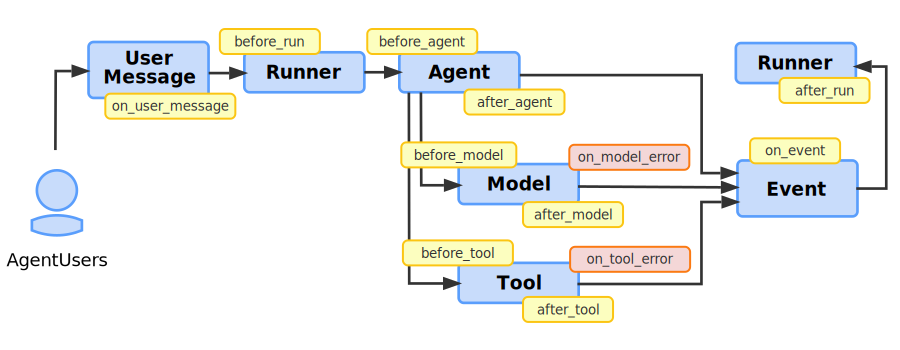

插件¶
什麼是 Plugin？¶
在 Agent Development Kit (ADK) 中，Plugin 是一種自訂程式碼模組，可以透過 callback hooks 在 agent 工作流程生命週期的不同階段執行。你可以利用 Plugin 來實現適用於整個 agent 工作流程的功能。以下是 Plugin 的一些典型應用場景：
- 日誌與追蹤（Logging and tracing）：建立詳細的 agent、工具（tools）以及生成式 AI 模型活動日誌，便於除錯與效能分析。
- 政策執行（Policy enforcement）：實作安全防護措施，例如檢查使用者是否有權限使用特定工具的函式，若無權限則阻止其執行。
- 監控與指標（Monitoring and metrics）：收集並匯出 token 使用量、執行時間及呼叫次數等指標，傳送至監控系統如 Prometheus 或 Google Cloud Observability （前稱 Stackdriver）。
- 回應快取（Response caching）：檢查請求是否已發生過，若是則可回傳快取回應，省略耗時或高成本的 AI 模型或工具呼叫。
- 請求或回應修改（Request or response modification）：動態新增資訊至 AI 模型提示詞，或標準化工具的輸出回應。
Tip
在實作安全防護措施與政策時，建議使用 Agent Development Kit (ADK) 插件（ADK Plugins），其模組化與彈性均優於 Callbacks。更多詳情請參閱 Callbacks and Plugins for Security Guardrails。
Caution
ADK 網頁 UI 不支援插件（Plugins）。
如果你的 Agent Development Kit (ADK) 工作流程使用了插件（Plugins），你必須在沒有網頁 UI 的情況下執行你的工作流程。
提示：在實作安全防護措施與政策時，建議使用 ADK 插件（Plugins），其模組化與彈性優於 Callbacks。詳情請參閱安全防護的 Callbacks 與 Plugins。
插件（Plugins）如何運作？¶
ADK 插件（Plugin）會繼承 BasePlugin 類別，並包含一個或多個 callback 方法，用以指定該插件應在 agent 生命週期的哪些階段執行。你可以透過在 agent 的 Runner 類別中註冊插件，將其整合進 agent。關於如何以及在哪些地方觸發插件，請參閱插件 Callback hooks。
插件功能是建立在Callbacks 基礎之上，這是 ADK 可擴展架構的關鍵設計元素。一般來說，Agent Callback 會設定於「單一 agent、單一工具」針對「特定任務」；而插件（Plugin）則是在 Runner 上註冊一次，其 callbacks 會全域套用至該 runner 管理的每一個 agent、工具與大型語言模型 (LLM) 呼叫。插件讓你能將相關的 callback 函式打包，方便於整個工作流程中重複使用。因此，插件是實作橫跨整個 agent 應用程式功能的理想方案。
定義與註冊插件（Plugins）¶
本節說明如何定義 Plugin 類別，並將其註冊至 agent 工作流程。完整程式碼範例請參閱 Plugin Basic 於原始碼庫中。
建立 Plugin 類別¶
首先，繼承 BasePlugin 類別，並新增一個或多個 callback 方法，如下方程式碼範例所示：
from google.adk.agents.base_agent import BaseAgent
from google.adk.agents.callback_context import CallbackContext
from google.adk.models.llm_request import LlmRequest
from google.adk.plugins.base_plugin import BasePlugin
class CountInvocationPlugin(BasePlugin):
"""A custom plugin that counts agent and tool invocations."""
def __init__(self) -> None:
"""Initialize the plugin with counters."""
super().__init__(name="count_invocation")
self.agent_count: int = 0
self.tool_count: int = 0
self.llm_request_count: int = 0
async def before_agent_callback(
self, *, agent: BaseAgent, callback_context: CallbackContext
) -> None:
"""Count agent runs."""
self.agent_count += 1
print(f"[Plugin] Agent run count: {self.agent_count}")
async def before_model_callback(
self, *, callback_context: CallbackContext, llm_request: LlmRequest
) -> None:
"""Count LLM requests."""
self.llm_request_count += 1
print(f"[Plugin] LLM request count: {self.llm_request_count}")
此範例程式碼實作了 before_agent_callback 和 before_model_callback 的 callbacks，用於在 agent 的生命週期中統計這些任務的執行次數。
註冊 Plugin 類別¶
將你的 Plugin 類別整合進來，可以在 agent 初始化時，於 Runner 類別中，透過 plugins 參數進行註冊。你可以使用此參數指定多個 Plugin。以下程式碼範例展示如何將前一節定義的 CountInvocationPlugin plugin 註冊到一個簡單的 Agent Development Kit (ADK) agent 中。
from google.adk.runners import InMemoryRunner
from google.adk import Agent
from google.adk.tools.tool_context import ToolContext
from google.genai import types
import asyncio
# Import the plugin.
from .count_plugin import CountInvocationPlugin
async def hello_world(tool_context: ToolContext, query: str):
print(f'Hello world: query is [{query}]')
root_agent = Agent(
model='gemini-2.0-flash',
name='hello_world',
description='Prints hello world with user query.',
instruction="""Use hello_world tool to print hello world and user query.
""",
tools=[hello_world],
)
async def main():
"""Main entry point for the agent."""
prompt = 'hello world'
runner = InMemoryRunner(
agent=root_agent,
app_name='test_app_with_plugin',
# Add your plugin here. You can add multiple plugins.
plugins=[CountInvocationPlugin()],
)
# The rest is the same as starting a regular ADK runner.
session = await runner.session_service.create_session(
user_id='user',
app_name='test_app_with_plugin',
)
async for event in runner.run_async(
user_id='user',
session_id=session.id,
new_message=types.Content(
role='user', parts=[types.Part.from_text(text=prompt)]
)
):
print(f'** Got event from {event.author}')
if __name__ == "__main__":
asyncio.run(main())
使用 Plugin 執行 agent¶
如同一般操作方式執行 Plugin。以下範例顯示如何在命令列執行：
ADK web interface 不支援 ADK 插件（Plugins）。 如果你的 Agent Development Kit (ADK) 工作流程使用了 ADK 插件，則必須在沒有網頁 UI 的情況下執行你的工作流程。
前述 agent 的輸出應該會類似於以下內容：
[Plugin] Agent run count: 1
[Plugin] LLM request count: 1
** Got event from hello_world
Hello world: query is [hello world]
** Got event from hello_world
[Plugin] LLM request count: 2
** Got event from hello_world
如需有關執行 ADK agent 的更多資訊，請參閱 快速開始 指南。
使用插件（Plugin）構建工作流程¶
Plugin 回呼（callback）掛鉤是一種實現邏輯的機制，可攔截、修改，甚至控制 agent 執行生命週期。每個掛鉤都是你 Plugin 類別中的特定方法，你可以實作這些方法，讓程式碼在關鍵時刻執行。根據你的掛鉤回傳值，你可以選擇以下兩種運作模式：
- 觀察（Observe）： 實作一個沒有回傳值的掛鉤（
None）。這種方式適合用於紀錄日誌或收集指標等任務，因為它允許 agent 的工作流程不受干擾地進行到下一步。例如，你可以在 Plugin 中使用after_tool_callback來記錄每個工具的結果以便除錯。 - 介入（Intervene）： 實作一個掛鉤並回傳值。這種方式會中斷（short-circuit）工作流程。
Runner會停止處理，跳過任何後續的插件和原本預期要執行的動作（如 Model 呼叫），並將 Plugin 回呼的回傳值作為結果。常見的用例是實作before_model_callback來回傳快取的LlmResponse，避免重複且昂貴的 API 呼叫。 - 修正（Amend）： 實作一個掛鉤並修改 Context 物件。這種方式允許你修改將要執行之模組的 context 資料，但不會中斷該模組的執行。例如，為 Model 物件執行時新增額外、標準化的提示文字。
注意： Plugin 回呼函式的優先順序高於物件層級所實作的回呼。這表示任何 Plugin 回呼程式碼都會在 Agent、Model 或 Tool 物件的回呼執行之前執行。此外，如果 Plugin 層級的 agent 回呼有回傳任何值（非空的 None 回應），則 Agent、Model 或 Tool 層級的回呼將不會執行（會被跳過）。
Plugin 的設計建立了程式碼執行的階層，並將全域關注事項與本地 agent 邏輯分離。Plugin 是你所建立的有狀態模組（例如 PerformanceMonitoringPlugin），而回呼掛鉤則是該模組內會被執行的特定函式。這種架構與標準 Agent 回呼有以下幾點根本差異：
- 作用範圍（Scope）： Plugin 掛鉤是全域的。你只需在
Runner上註冊一次 Plugin，其掛鉤就會普遍適用於它所管理的每個 Agent、Model 和 Tool。相較之下，Agent 回呼是本地的，需針對特定 agent 實例個別設定。 - 執行順序（Execution Order）： Plugin 擁有優先權。對於任何事件，Plugin 掛鉤都會在對應的 Agent 回呼之前執行。這種系統行為使 Plugin 成為實作橫向功能（如安全政策、全域快取、一致性日誌）於整個應用程式中的正確架構選擇。
Agent 回呼與 Plugin¶
如前一節所述，Plugin 與 Agent 回呼在功能上有一些相似之處。下表更詳細地比較了 Plugin 與 Agent 回呼之間的差異。
| Plugin | Agent 回呼 | |
|---|---|---|
| 作用範圍（Scope） | 全域：適用於
所有 Runner 中的 agent/tool/LLM。 |
本地：僅適用於 其所設定的特定 agent 實例。 |
| 主要用途 | 橫向功能：日誌、政策、監控、全域快取。 | 特定 agent 邏輯：修改單一 agent 的行為或狀態。 |
| 設定方式 | 在 Runner 上設定一次。 |
在每個 BaseAgent 實例上個別設定。 |
| 執行順序 | Plugin 回呼會在 Agent 回呼之前執行。 | Agent 回呼會在 Plugin 回呼之後執行。 |
Plugin 回呼掛鉤¶
你可以在 Plugin 類別中定義回呼函式，以決定 Plugin 何時被呼叫。當收到使用者訊息、在呼叫 Runner、Agent、Model 或 Tool 前後、針對 Events，以及發生 Model 或 Tool 錯誤時，都可以使用這些回呼。這些回呼會覆蓋並優先於你在 Agent、Model 和 Tool 類別中所定義的任何回呼。
下圖說明了你可以在 agent 工作流程中掛接並執行 Plugin 功能的回呼點：
 圖 1. ADK agent 工作流程中 Plugin 回呼掛鉤的位置示意圖。
以下各節將更詳細說明 Plugin 可用的回呼掛鉤：
使用者訊息回呼¶
使用者訊息回呼（on_user_message_callback）會在使用者傳送訊息時觸發。on_user_message_callback 是最早執行的掛鉤，讓你有機會檢查或修改初始輸入。
- 觸發時機： 此回呼會在
runner.run()之後、其他任何處理之前立即發生。 - 用途： 第一個檢查或修改使用者原始輸入的機會。
- 流程控制： 回傳
types.Content物件以取代使用者原本的訊息。
以下程式碼範例展示了此回呼的基本語法：
async def on_user_message_callback(
self,
*,
invocation_context: InvocationContext,
user_message: types.Content,
) -> Optional[types.Content]:
Runner 啟動回呼（Runner start callbacks）¶
Runner 啟動 回呼（before_run_callback）會在 Runner 物件取得（可能已修改過的）使用者訊息並準備執行時觸發。此時會觸發 before_run_callback，讓你能在任何 agent 邏輯開始前進行全域設定。
- 觸發時機： 當
runner.run()被呼叫後立即執行，在任何其他處理之前。 - 目的： 這是檢查或修改使用者原始輸入的第一個機會。
- 流程控制： 回傳
types.Content物件即可取代使用者的原始訊息。
以下程式碼範例展示了此回呼的基本語法：
async def before_run_callback(
self, *, invocation_context: InvocationContext
) -> Optional[types.Content]:
agent 執行回呼（Agent execution callbacks）¶
agent 執行回呼（before_agent、after_agent）會在Runner 物件呼叫 agent 時發生。before_agent_callback 會在 agent 主要工作開始前立即執行。主要工作包含 agent 處理請求的整個流程，這可能會涉及呼叫大型語言模型 (LLM) 或 tools。當 agent 完成所有步驟並準備好結果後，after_agent_callback 會被執行。
注意： 實作這些回呼的 Plugin 會在 Agent 層級的回呼執行之前被執行。此外，如果 Plugin 層級的 agent 回呼回傳的不是 None 或 null 回應，則 Agent 層級的回呼不會被執行（會被略過）。
如需有關作為 agent 物件一部分所定義的 agent 回呼的詳細資訊，請參閱 Types of Callbacks。
模型回呼（Model callbacks）¶
模型回呼 （before_model、after_model、on_model_error） 會在 Model 物件執行前後發生。Plugins 功能也支援在發生錯誤時的回呼，詳情如下：
- 如果 agent 需要呼叫 AI 模型，會先執行
before_model_callback。 - 如果模型呼叫成功，接著會執行
after_model_callback。 - 如果模型呼叫因例外（exception）失敗，則會觸發
on_model_error_callback，可用於優雅地處理錯誤。
注意： 實作 before_model 和 **after_model 回呼方法的 Plugin 會在 Model 層級的回呼執行之前被執行。此外，如果 Plugin 層級的模型回呼回傳的不是 None 或 null 回應，則 Model 層級的回呼不會被執行（會被略過）。
模型錯誤回呼細節（Model on error callback details）¶
Model 物件的 on error 回呼僅由 Plugins 功能支援，運作方式如下：
- 觸發時機： 在模型呼叫期間發生例外（exception）時執行。
- 常見用途： 優雅的錯誤處理、記錄特定錯誤，或回傳備用回應，例如「AI 服務目前無法使用」。
- 流程控制：
- 回傳
LlmResponse物件可抑制例外並提供備用結果。 - 回傳
None則會讓原始例外繼續拋出。
- 回傳
注意： 如果 Model 物件的執行回傳 LlmResponse，系統會繼續執行流程，並正常觸發 after_model_callback。
以下程式碼範例顯示此回呼的基本語法：
async def on_model_error_callback(
self,
*,
callback_context: CallbackContext,
llm_request: LlmRequest,
error: Exception,
) -> Optional[LlmResponse]:
工具回呼函式¶
插件的工具回呼函式 (before_tool, after_tool, on_tool_error)
會在工具執行前後，或發生錯誤時觸發。Plugins 功能同時支援錯誤事件的回呼，如下所述：\
- 當 agent 執行工具時，會先執行
before_tool_callback。 - 如果工具執行成功，接著會執行
after_tool_callback。 - 如果工具執行時發生例外狀況，則會觸發
on_tool_error_callback，讓你有機會處理失敗情形。如果on_tool_error_callback回傳一個 dict，after_tool_callback會正常被觸發。
注意： 實作這些回呼函式的插件，會在工具層級的回呼函式執行之前被執行。此外，如果插件層級的工具回呼函式回傳的內容不是 None 或 null，則工具層級的回呼函式將不會被執行（會被略過）。
工具錯誤回呼函式細節¶
Tool 物件的錯誤回呼函式僅由 Plugins 功能支援，運作方式如下：
- 觸發時機： 當工具的
run方法執行時發生例外狀況。 - 用途： 捕捉特定工具例外（如
APIError）、記錄失敗，並將更友善的錯誤訊息回傳給大型語言模型 (LLM)。 - 流程控制： 回傳
dict可抑制例外，並提供備用結果。回傳None則會讓原始例外繼續拋出。
注意： 若回傳 dict，將會恢復執行流程，並且
after_tool_callback 會正常被觸發。
以下程式碼範例展示此回呼函式的基本語法：
async def on_tool_error_callback(
self,
*,
tool: BaseTool,
tool_args: dict[str, Any],
tool_context: ToolContext,
error: Exception,
) -> Optional[dict]:
事件回呼（Event callbacks）¶
事件回呼（on_event_callback）會在 agent 產生輸出時觸發，例如文字回應或工具呼叫 (tool call) 結果，這些輸出會以 Event 物件的形式讓渡（yield）。on_event_callback 會針對每個事件觸發，讓你能在事件串流到用戶端之前進行修改。
- 觸發時機： 在 agent 讓渡（yield）
Event之後、傳送給使用者之前。一次 agent 執行可能產生多個事件。 - 用途： 適合用於修改或豐富事件（例如新增中繼資料），或根據特定事件觸發副作用。
- 流程控制： 回傳
Event物件可取代原本的事件。
以下程式碼範例展示了此回呼的基本語法：
async def on_event_callback(
self, *, invocation_context: InvocationContext, event: Event
) -> Optional[Event]:
Runner 結束回呼¶
Runner end 回呼 (after_run_callback) 會在 agent 完成其整個流程且所有事件都處理完畢時觸發，Runner 完成其執行後結束。after_run_callback 是最後一個 hook，非常適合用於清理（cleanup）與最終報告。
- 觸發時機： 當
Runner完整執行並完成請求後。 - 用途： 適合用於全域清理任務，例如關閉連線、最終紀錄日誌或彙整指標資料。
- 流程控制： 此回呼僅用於結束階段的清理，無法變更最終結果。
以下程式碼範例展示了此回呼的基本語法：